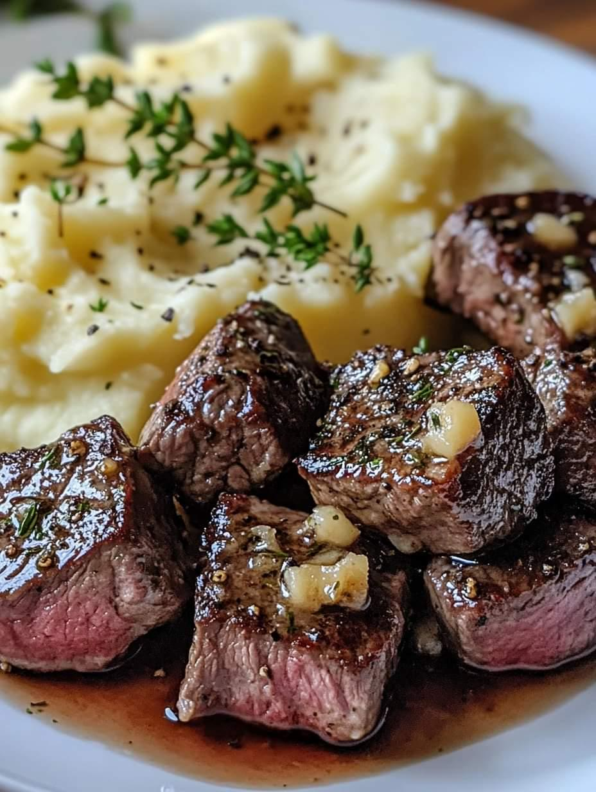

Garlic Butter Steak Bites with Creamy Mashed Potatoes
The best garlic butter steak bites with creamy mashed potatoes ever!

Ingredients:
Mashed potatoes:
- lb. potatoes (about 5 or 6 medium, Russet or Yukon Gold)
- 2 Tbsps clarified butter or ghee
- 1/4 cup milk of choice, I used cashew milk
- 1/4 cup plain Greek yogurt
- sea salt and freshly ground black pepper, to taste
Steak bites:
- 1 Tbsp avocado oil, or olive oil
- 6 cloves fresh garlic, peeled and crushed
- 1 lb. sirloin steak cut into bite size pieces
- sea salt, to taste
- 2 Tbsps clarified butter or ghee
- 1 Tbsp chopped fresh parsley
- 1 Tbsp chopped chives
Instructions:
To make the mashed potatoes:
- Peel your potatoes, then thoroughly rinse.
- Bring a large pot of salted water to a boil. Carefully add the potatoes and boil until they break apart easily when pierced with a fork, about 20 minutes.
- Once done, drain really well and mash with a potato masher until you achieve your desired consistency.
- Bring milk and butter to a low simmer in a small saucepan and whisk together.
- Add yogurt to the mashed potatoes and stir well. Slowly pour in the warm buttermilk mixture while using the potato masher to reach the desired consistency and smoothness—season with sea salt and pepper to taste.
To make the steak bites:
- Heat your oil in a large heavy skillet over medium-high heat.
- Add in crushed garlic cloves and cook for 1 minute, until fragrant.
- Add in steak bites and sear each side until slightly brown, about 3-4 minutes on each side.
- Once the steak bites are done to your liking, reduce the heat and add butter or ghee. Stir to combine until the butter is melted and nicely coats the steak. Season with sea salt and pepper to taste, if desired.
- Garnish with chopped parsley and chives.